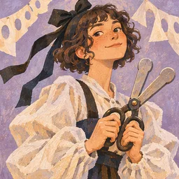
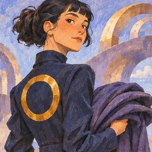

Книга ведущего · Сюрреалистическое музыкальное приключение о создании нового спектакля · 12+ · 3–7 игроков + ведущий
Оркестр невозможного сна
В добровольном общем сне звуки становятся лестницами, парусами и цветными поверхностями. Ваша новая труппа ставит «Изнанку горизонта»: огромное синее кольцо с золотой внутренней стороной должно вывернуться через собственный пустой центр над сценой-морем. Готового произведения нет. Вы придумаете его характер, добудете собственный звук приключением, соберёте невозможную декорацию и проведёте настоящую премьеру. Восхищение публики не обещано; один красивый замысел неизбежно потребует отказаться от другого.
Иллюстрация к первой встрече
Если партия изменила план
Перед чтением вступления сверьте место героев, присутствующих людей и предметы с итогом прошлого вечера. Если условия встречи отпали, сыграйте последствия там, где находится партия. Событие по расписанию может произойти за кадром. Герои узнают о нём от тех, кто был на месте.
Вечер 7. Если труппа снимает премьеру
Спросите, кто из зрителей уже в фойе и что труппа хочет им показать из готового. Один фрагмент может стать камерным показом. При полном отказе финальным кадром станет разговор у свёрнутой ленты.
Группа отказалась от задания
Выступать не станем. Останемся у воды следить, где можно безопасно пройти зрителям. Выбираем безопасное место для зрителей за кулисой. Зрители уходят по размеченной дорожке. У оркестра по-прежнему нет обещанного нами номера.
Игроки раскрыли тайну раньше
Дважды повторим рисунок у ступени, затем поменяем один такт на двух образцах Левона. Доступные свидетельства — Ступень с пустым тактом, Два образца Левона. Повтор удерживает край, перемена его гнёт, пауза открывает шов. Старую работу можно проверить тем же способом. Оставляем на пробе шов и просим повторить его без подсказки. Изменяется только соответствующая поверхность. В последней пробе музыканты могут сменить рисунок до того, как он закрепится.
Партия уступила поле
Лишнее эхо удерживает проход, часть партитуры не слышна. Записываем, какая часть конструкции уцелела для другой постановки. Отмечаем пропущенный такт как паузу и играем маленьким составом на сухой площадке. Прежняя поверхность остаётся недоступной.
Карман ведущего
Для игры без подготовки: что говорят люди, места в стороне от главной дороги и прохожие. Пометки о правде слухов — только для ведущего; сказанное за столом становится фактом мира, лишь когда вы его подтвердите.
Слухи
«Белая дверь открывается в обе стороны. Ушёл посреди репетиции — вернёшься прямо к своему столу, и работа будет лежать, как ты её оставил».
Правда. Так устроен сон: двери пробуждения не берут ни памяти, ни времени, ни обещаний, а работа ждёт на столе эскизов. Слух повторяет табличку первого вечера; им удобно успокоить игрока, которому нужно уйти пораньше.
«Мост повторённых шагов сложили первые гости: ходили туда-сюда, пока шаги не застыли в воздухе. Потому всё повторённое здесь и держит».
Отчасти правда. Правда в том, что повтор одного рисунка делает поверхность твёрдой: этот закон герои узнают в первом вечере любым путём. Кто построил мост, не знает никто; Мира любит эту легенду, но проверять её не нужно.
«Во дворе эха не кричи. Крикнешь — и потом полдня обходишь собственный крик, а он лежит поперёк дороги и блестит».
Отчасти правда. Громкий звук там и правда возвращается выпуклым предметом. Но лежит он не полдня: пауза распускает его, а направляющий желоб уводит в сторону. Ен Завиток показывает это в пятом вечере.
«Эхо ворует песни. Напоёшь рядом с желобом свой мотив — оно его подхватит и унесёт, а ты потом и не вспомнишь, как он шёл».
Неправда. Неправда: материальное эхо копирует форму повторяющегося рисунка и не трогает ни памяти, ни чужой музыки. Ен охотно это опровергает; эхо в кампании не злодей и не вор.
«Свалишься во сне с высоты — проснёшься с синяком. Вот потому на мост повторённых шагов никто и не лезет без нужды».
Неправда. Суеверие осторожных гостей. Любое падение в Излучине кончается мягкой посадкой на белый настил, и никакой ушиб не уходит из сна в явь. Подходит для робкого прохожего на мосту в первом вечере.
«На берегу премьеры афишу читают раньше, чем садятся. Что там обещано, того зритель и ждёт, а не дождётся — непременно скажет об этом в фойе».
Правда. Гости действительно сравнивают обещание с увиденным: об этом шестой вечер с афишей и восьмой с отзывами. Слух никого не пугает провалом, он напоминает, что честная афиша — часть работы.
«Левон Грань режет свои пластины из настоящей меди и льда где-то за краем сна и привозит в карьер на тачке».
Неправда. В карьере нет ни камня, ни льда: звучащие поверхности сочиняют повтором и изменением, и Левон охотно показывает, как сделал свои образцы. Слух хорош для второго вечера: он подводит к тому, что материал труппа создаст сама.
«Бела Обод любит только огромное. Принеси ей маленькую вещицу — даже не посмотрит».
Отчасти правда. Бела и правда любит большие цельные образы и не скрывает этого. Но она помогает любому выбранному варианту, в том числе камерной петле, и честно называет цену каждой версии.
«Оста Свет никому не даёт судить о работе с одной площадки. Сначала спереди, потом сбоку, потом сверху, а уж затем спорьте сколько угодно».
Правда. Так устроен её балкон в шестом вечере: один предмет выглядит по-разному с трёх ракурсов. Слух лишь готовит игроков к смене точек обзора и ничего не решает за них.
«У Ена Завитка в капюшоне целая горсть старых завитков. Остывшие, маленькие, они больше не растут, только звякают, когда он смеётся».
Правда. Ен собирает собственные повторяющиеся фигуры, и снятый завиток для него не потеря: он уйдёт в другую вещь. Вспомните это в пятом вечере, если труппа снимает любимую репризу и боится его огорчить.
«На чердаке ножницы нарочно тупые. Режут там не лезвием, а паузой, а ножницами только показывают, где пройдёт разрез».
Правда. Ася Прорезь вскрывает швы пустой карточкой: пауза открывает отмеченный шов и не задевает соседние части. Это уже известный героям закон формы; слух лишь подсказывает, что на чердаке четвёртого вечера никто не поранится.
«Кто на премьере начнёт первым, тому и хлопать будут громче всех. Так что за первый ход стоит поспорить».
Неправда. Неправда: отзывы выводятся только из того, что зрители действительно увидели, и аплодисменты никому не обещаны. Первым каждый раз говорит другой игрок; слух можно весело опровергнуть устами Миры.
Места в стороне
Скамейка у развилки
Длинная белая скамья там, где звучащие дорожки расходятся к мастерским. Здесь ждут тех, кто проснулся посреди разговора: сон на них не сердится, а друзья далеко не уходят. Если сидеть слишком долго, скамья начинает тихонько мурлыкать колыбельную, словно намекает, что пора либо в дверь, либо за работу. Спинка исцарапана именами — кто ждал, тот и расписался.
Лавка точёных карандашей
Крохотный прилавок под навесом у поворота к карьеру. Здесь точат карандаши бесплатно, а взамен просят оставить в жестяной банке огрызок старого. Карандаши в Излучине разговорчивые: штрих каждого слегка звенит, и по звуку можно узнать, кто пишет за соседним столом. Над прилавком висит табличка «Точу всё, кроме споров» — шутка, которую повторяют в каждой мастерской.
Сушилка брызг
У подножия моря, в стороне от лодок, натянуты бельевые верёвки, и на прищепках сохнут бумажные запятые — брызги, которые не успели растаять. Сушат их терпеливо: пересушенная запятая сворачивается в точку и больше не шелестит. Гости берут по одной на память и закладывают ею страницу в блокноте эскизов. В тихие часы верёвки шуршат на весь берег, как читальный зал.
Фойе берега премьеры
Узкий коридор за последним рядом, где до показа толпятся зрители. На крючках вешалки висят не пальто, а пустые карточки: гости оставляют здесь свою тишину, чтобы не шуршать в зале. У стены стоит подставка для афиши, и пол перед ней вытерт до блеска — каждый входящий сперва останавливается прочитать обещание. После показа здесь спорят громче всего.
Ступенька первого шага
Одна-единственная цветная ступень у начала моста повторённых шагов. Висит она так низко, что на неё можно встать, не отрываясь от настила. Новички пробуют на ней свой первый повтор и слушают, как она отвечает, — всегда одинаково, высоко и чисто. Говорят, её оставил кто-то из первых гостей Излучины, чтобы никому не было страшно начинать.
Чайный угол карьера
За столом скульптора, у самой стенки чаши, стоят медный чайник и десяток разномастных кружек. Пьют здесь стоя, потому что сесть негде, и разговаривают вполголоса: пластины рядом отвечают на громкие слова. Пустая кружка тонко звенит, если по ней щёлкнуть, и мастера карьера так зовут друг друга на перерыв. Чай всегда тёплый, хотя чайник никто не греет.
Прохожие
Нора Пюпитр
Высокая женщина в длинной вязаной кофте; под мышкой у неё пять складных пюпитров, и они позвякивают при каждом шаге.
«Нот здесь никто не читает, милые. Пюпитр нужен, чтобы было куда положить мысль».
Может рассказать: Что работа, оставленная на столе эскизов, дожидается автора, сколько бы он ни отсутствовал, и может показать, где чей эскиз лежит.
Тимка Колок
Вихрастый мальчишка в комбинезоне не по росту, с деревянным колком от скрипки на верёвочке вместо оберега.
«Я дорожки по звуку различаю: к морю она шипит, к карьеру гудит, а к чердаку молчит».
Может рассказать: Как короткой дорогой пройти к любой мастерской Излучины и у какого поворота стоит ближайшая белая дверь.
Фил Канифоль
Седой старичок в халате, присыпанном янтарной пылью; в кармане у него кусок канифоли, которым он натирает всё подряд, от перил до пуговиц.
«Всякой вещи нужна капля шершавости. Иначе звук с неё соскальзывает, как с мокрого стекла».
Может рассказать: Что на открытом столе скульптора в карьере образцы можно брать в руки: Левон нарочно скругляет им края, чтобы никто не порезался.
Зоя Брызга
Девушка в резиновых сапогах и фартуке с прищепками; к щеке у неё прилипла бумажная запятая, и она об этом не знает.
«Брызги сушить — дело тонкое. Пересушишь — и вместо запятой у тебя точка».
Может рассказать: Что под вертикальным морем всегда лежит мягкий белый настил, так что выпасть из лодки здесь не страшно.
Гордей Антракт
Круглый усатый человек с лотком на ремне; над бумажными стаканчиками поднимается пар и закручивается нотными завитками.
«Перерыв — тоже часть спектакля. Без него и лучший номер никто не дослушает».
Может рассказать: Что перед показом зрители в фойе первым делом читают афишу у входа и потом спорят, что именно им пообещали.
Луша Мелок
Девочка лет девяти с цветными мелками во всех карманах и белыми от мела коленками.
«Я дверь нарисовала, а она не открывается. Значит, ненастоящая. Настоящие все белые».
Может рассказать: Что Мира Рампа, когда ждёт новых гостей, садится на край сцены и болтает ногами, как на причале.
За десять минут до первой игры
Откройте первый вечер, прочитайте правду мира и участников. Остальные вечера — планы, их исход решают игроки.
Выберите пакет под фактическое число игроков. Первые три героя — готовое ядро; остальные добавляются по порядку. Возраст игрока не определяет героя.
Согласуйте темы, длительность и сигнал паузы. Передайте игрокам только players.html; раздатки выдавайте по отдельности после указанного открытия.
Откройте Мастерскую проекта, создайте личный черновик и импортируйте выбранный JSON через загрузку пакета. Проверьте состав и начало в предпросмотре. Запуск кампании подтверждает ведущий штатным действием.
Откройте иллюстрацию завязки отдельно. Портреты героев входят в файл для игроков, портреты встречных — в книгу ведущего. Тактические схемы доступны в разделе карт.
8 вечеров; 180 минут: открытие и воспоминание о прошлом вечере 10; сцены 45 + 45 + 55; перерыв после второй сцены 10; завершение и запись решений 15. Перерыв можно перенести без сюжетной цены.
Излучина — общий сон с мастерскими и открытой сценой. Любой участник может проснуться через белую дверь и вернуться без платы, потери личности или наказания; оставленная работа хранится на столе. Сны не меняют прошлое и не предсказывают будущее. Персонажи используют обычные канонические классы третьего уровня: воин выглядит сценическим такелажником, плут ловцом эха, жрец хранителем паузы, волшебник рисовальщиком звучащих линий. Оболочка не даёт новых автоматических правил. Для музыки достаточно назвать, записать или выбрать рисунок звука; уметь петь и читать ноты не нужно.
Осязаемое чудо, смешные трудности репетиции и серьёзное право выбрать несовершенный замысел. Опасности сна выразительны, но без жестокости и принудительного исповедания.
Авторский выбор и цена красоты
Удовольствие от совместного ремесла без обязательного единомыслия
Масштаб, видимость процесса и право не нравиться всем
Подростки и взрослые как равные создатели
Границы
12+: без сексуального содержания, натуралистических травм, принуждения к роли или личных признаний. Ошибка в музыке не становится поводом унижать игрока.
Уход из сна и возвращение свободны. Белая дверь доступна из каждой сцены; отсутствие человека не портит его персонажа и не отнимает вклад.
Любое сценическое падение можно описать как мягкую посадку на белый настил; боевые последствия применяются только при добровольно выбранной подготовленной встрече.
Никто не должен реально петь, отбивать ритм, различать высоту звука или читать ноты. Описание, рисунок, текст и карточки полностью равнозначны.
Люди за столом
Перед первым вечером вместе назовите приемлемые темы и сигнал паузы. Перед сценой ведущий коротко предлагает её физическую задачу, а затем более глубокий вопрос о форме; выбирать глубину можно независимо от возраста.
Каждую сцену начинает другой игрок. Взрослый не получает роль руководителя автоматически; возраст игрока не выбирает возраст героя, класс, сложность вопроса или решающий голос. Доступен пас без объяснения.
Предложение можно сказать, написать или показать карточками: «повтор», «изменение», «пауза», «соединение». Ведущий вслух описывает получившуюся форму для всех. Не проводите проверки реального слуха, темпа, моторики или артистизма.
Для сложного действия сначала соберите все намерения: кто прокладывает путь, кто меняет материал, кто наблюдает результат. Затем разрешите их одним общим проходом. Каждый выбирает задачу; никакая из них не закреплена за классом или необязательным героем.
При разделении группы чередуйте короткие ходы после одного значимого действия. В каждом месте есть белая дверь; точка объединения — стол эскизов на пустом просцениуме. Не держите половину стола зрителями всей сцены.
На трёх местах используйте первых трёх героев или любых троих по выбору. Нужная техника доступна через обычные действия, карточки и помощь мастерской. Герои четвёртого–седьмого мест добавляют личные взгляды, но не ключи к сюжету.
Отсутствующий герой добровольно проснулся. Его эскиз остаётся доступен без имитации его решений; спорный выбор откладывают или принимают присутствующие от своего имени. Вернувшийся выбирает следующую задачу без штрафа.
Ведите общий лист постановки: рисунок звука; размер кольца; видимость швов; устройство моря; оставленная или снятая реприза; обещание афиши. Записывайте только сделанные решения, не будущие победы. Это памятка ведущего, не новые автоматические игровые ресурсы.
В каждой сцене предложены два пути с разными издержками. Не сводите спор к единогласному согласию: после выслушанных предложений используйте заранее выбранное столом решение, например большинство с правом авторской пометки. Несогласный сохраняет равное право на следующую сцену.
Масштабирование группы
3 игроков
Три игрока и ведущий. Объединяйте задачи в путь, форму и наблюдение; меняйте их каждый вечер. НИП удерживает свободный конец по точному указанию героев, но не выбирает версию. На необязательной встрече два противника по 12 хитов.
4 игроков
Четыре игрока и ведущий. Добавьте отдельную задачу для света или движения, каждый получает первый ход хотя бы раз за вечер. Необязательная встреча: три противника по 14 хитов.
5 игроков
Пять игроков и ведущий. Один участник меняет форму, двое держат путь, один управляет видом из зала, один замечает результат; роли меняются. Необязательная встреча: три противника по 16 хитов.
6 игроков
Шесть игроков и ведущий. Две тройки получают связанные задачи внутри и снаружи кольца. Сначала все объявляют намерения, затем ведущий чередует по одному действию, соединяя группы в конце сцены. Необязательная встреча: четыре противника по 18 хитов.
7 игроков
Семь игроков и ведущий. Две тройки работают с противоположными краями, седьмой выбирает наблюдение и собственное вмешательство; в следующей сцене этот пост меняется. Ведущий не отдаёт управление взрослому по умолчанию. Необязательная встреча: пять противников по 20 хитов.
Первое чтение вслух
Сон начинается с тишины, в которой слышно всё: как поскрипывает под ногами белый настил, как где-то далеко шуршит бумага, как тонко звенит воздух, будто кто-то провёл пальцем по краю стеклянного бокала. Над головой — белое небо без солнца и облаков, ровное, как ещё не расписанный задник. Это Излучина звучащих форм, общий сон, куда по своей воле приходят те, кто любит сочинять. Здесь звук можно потрогать: повторённый шаг ложится ступенью, долгий гул натягивается парусом, смех рассыпается цветными запятыми. От сцены во все стороны уходят звучащие дорожки к мастерским — к карьеру, где поют пластины, к морю, которое стоит на ребре, к чердаку, где режут тишину. У каждого поворота стоит обычная белая дверь; здесь говорят, что она открывается в обе стороны. Посреди белой сцены лежит синяя лента, длинная, как река на карте, и её золотая изнанка отражается в пустом воздухе тёплым светом. На краю сцены стоит дверь с надписью «Можно уйти. Можно вернуться». Хозяйка открытой сцены, Мира Рампа, в охристом пиджаке с белыми локтями, кладёт перед вами пустую афишу и придавливает её карандашом на шнурке: «Через восемь встреч здесь можно показать то, чего ещё никто не сочинил. Я предлагаю вывернуть горизонт. Но чем станет наше кольцо и что увидят зрители, решаете вы». Лента вздрагивает и чуть приподнимает край, будто прислушивается. Она ждёт первого звука, который вы опишете.
Правда мира · только ведущему
Закон формы действует сейчас: повтор одного описанного рисунка звука делает соответствующую поверхность жёсткой и несущей. Смена рисунка размягчает её; намеренная пауза прорезает выбранный шов. Размягчённая часть сохраняет материал, но не держит стоящего на ней персонажа. Равнозначны устное описание, запись и карточки; точность реального исполнения не влияет на мир.
Общий рисунок снова соединяет соприкасающиеся края. Он не может одновременно держать одну и ту же часть жёсткой и гибкой. У гигантского кольца это исключает непрерывное выворачивание всей гладкой несущей поверхности. Возможны секции с видимыми швами, скрытые переходы или уменьшение кольца до переносимой гибкой петли. Внешняя рама может поддержать гибкую большую ленту без разреза, но сама занимает часть видимого контура или пустого центра. Не запрещайте обоснованное новое решение: назовите его сопоставимую художественную цену и опишите финал по фактическому показу.
Закон можно независимо узнать на ритмическом мосту, по уже сделанным опытам Левона и на собственной пробной петле. Ни одна дорога не требует успешного броска. Поздние улики описывают исходные свойства материалов и чужие прошлые опыты, а не результаты ещё не состоявшихся репетиций героев.
Бела любит цельный огромный образ и согласна на скрытые переходы. Рам ценит видимое движение и предпочитает открытые швы. Ни один не саботирует работу и не выражает обязательную позицию автора. Их эстетический спор нельзя снять обещанием всем идеального результата; они могут остаться при своих предпочтениях и всё же помочь.
Материальное эхо копирует форму повторяющегося рисунка, а не крадёт память, личность или чужую музыку. Его можно распустить паузой либо включить в новое произведение. Кольцо, море и эхо — неживые сценические материалы; сон никто не питает живыми существами.
Восьмой вечер — согласованная дата доступной сцены, не катастрофический срок. Можно представить фрагмент, перенести или отменить показ. Публика оценивает то, что действительно увидит, в соответствии со своими вкусами; ведущий не объявляет всеобщее признание за правильный моральный ответ. Возможные происшествия и финалы остаются подготовкой до решения стола.
Повороты сюжета
Только для ведущего. Сюжетные повороты держатся на мелочах, замеченных заранее: посейте их в названные вечера, а раскрытие отдайте героям, если они догадались раньше.
Одно место не умеет и держать, и гнуться
Кажется, что большое кольцо можно вывернуть целиком, гладко и непрерывно, если хорошо постараться. На деле закон формы не даёт одной и той же части быть одновременно жёсткой и гибкой: несущая поверхность сопротивляется повороту. Нужны секции со швами, скрытые переходы или кольцо поменьше — и у каждого решения своя цена.
Что посеять
Вечер 1. На мосту нельзя сгибать ту ступень, на которой стоишь: размягчённая поверхность больше не держит.
Вечер 1. На пробной ленте повтор делает край жёстким, а изменённый рисунок — гибким, и одновременно не выходит.
Поворот — вечер 2
На белом настиле у карьера труппа замыкает большую ленту и пытается провести золотой край внутрь. Левон кладёт ладонь на место столкновения: здесь повтор держит, а поворот просит гнуться. Пусть стол сам поймёт, что гладкое непрерывное выворачивание большого кольца невозможно, и выберет цену: швы, прятку или меньший размер. Если до карьера не дошли, то же столкновение покажет первая петля на столе Миры.
Что меняется после
Спор о форме превращается в выбор цены. Каждый следующий вечер проверяет конкретный компромисс, а не ищет волшебный способ обойти закон.
Эхо — это форма, а не вор
Выпуклое эхо, которое разрастается рядом с кольцом, легко принять за живое существо или за то, что крадёт чужую музыку и воспоминания. На деле материальное эхо просто копирует форму повторяющегося рисунка: его можно распустить паузой или включить в произведение. Оно занимает место, но ничего не забирает.
Что посеять
Вечер 2. В карьере от слишком долгого повтора отлетают лишние блестящие осколки: их можно разогнать игрой или спокойно перенести материал.
Вечер 3. У вертикального моря от длинного повтора вокруг рамки появляются округлые брызги, и Дори распускает их пустой карточкой.
Поворот — вечер 5
Во дворе выпуклого эха Ен показывает свой забитый желоб: «Я повторял завиток, потому что он смешной, а потом он вырос и уселся здесь. Его никто не крал, и он ничего не помнит». Пусть стол сам поймёт, что эхо — просто большая форма, и решит, оставлять ли любимую репризу. Если Ена не спросили, то же покажет пустая карточка, распускающая маленькую дугу.
Что меняется после
Эхо становится художественным материалом. Вопрос больше не в опасности, а в том, сколько места оно займёт рядом с главным жестом и чем за это придётся заплатить.
Бела и Рам оба правы
Бела и Рам спорят так упорно, что кажется: один из них прав, а другой мешает работе. На деле каждый уже платил за свой вкус: у Белы скрытый переход вызвал и восторг, и упрёк, у Рама открытый монтаж одному показался выразительным, другому — недоделанным. Их спор нельзя снять обещанием всем идеального результата.
Что посеять
Вечер 2. В карьере Бела предпочитает холодный цельный блик, но тут же добавляет, что будет помогать любой версии.
Вечер 4. На чердаке Рам предлагает двигать секции с настила, а Бела — скрыть переход водой; они спорят о видимом результате, а не о достоинстве авторов.
Поворот — вечер 6
На балконе косого взгляда Рам выкладывает стрелки прошлого номера и карточки двух отзывов: один гость видел движение, другому не хватило цельного образа. Если спросить Белу о цене цельности, она рассказывает о своём затемнении и двух противоположных отзывах. Пусть стол сам поймёт, что у каждого решения есть свои зрители и свои разочарованные.
Что меняется после
Выбор версии перестаёт быть поиском правого. Труппа подписывает рядом с решением его потерю, а Бела и Рам помогают — каждый оставаясь при своём вкусе.
Восемь вечеров
1. Лента выше стола — Начать собственное новое произведение, узнать закон формы хотя бы одним способом и выбрать первый выразительный жест кольца.
2. Карьер звучащих граней — Создать собственную большую поверхность, выбрать её фактуру и почувствовать цену увеличения первоначального жеста.
3. Море встало на ребро — Провести созданную поверхность над вертикальной водой и выбрать, помогает ли море видеть поворот или скрывает его переходы.
4. Выкройка для пустоты — Проделать проход через сложенную форму и создать собственную выкройку поворота с осознанной ценой швов.
5. Эхо, которое занимает место — Поймать и направить собственное материальное эхо, затем решить, заслуживает ли любимая реприза места в новом произведении.
6. Балкон косого взгляда — Показать фактический фрагмент с разных ракурсов, выбрать художественный приоритет и написать выполнимое обещание премьеры.
7. Ночь видимых швов — Смонтировать выбранную версию на настоящем берегу, пройти её в полном размере и подготовить конкретный путь остановки или сокращения.
8. Изнанка горизонта — Провести живую премьеру выбранного нового произведения либо честно остановить её, затем принять конкретные отзывы и дать каждому герою собственный эпилог.
Места
Излучина звучащих форм
Общий добровольный сон под белым небом без солнца, ровным, как нерасписанный задник. Звучащие дорожки тихо поют под ногами и связывают мастерские: карьер, море, чердак, двор эха и берег премьеры. У каждого поворота стоит обычная белая дверь пробуждения. Здесь говорят, что белая дверь открывается в обе стороны.
Пустой просцениум
Открытая сцена без задника и кулис, за которой сразу начинается белое небо. Посередине лежит длинная синяя лента с золотой изнанкой, у края — стол для эскизов с карточками, рамкой и пустой афишей. На белом полу удобно рисовать мелом, а каждый шаг отзывается тихим, чуть удивлённым звуком.
Мост повторённых шагов
Цветные ступени висят в воздухе над мягким белым настилом, ничем не скреплённые, и каждая звенит по-своему, когда на неё наступают. Вдоль них тянутся лёгкие перила, на которых лежат карточки с полосами, кругами и пустыми прямоугольниками. Упасть здесь можно разве что на мягкое: настил пружинит, как свежий снег.
Карьер звучащих граней
Широкая чаша, где вместо скал стоят высокие пластины, похожие одновременно на лёд и на медь. Одни шуршат, другие звенят, третьи гудят так низко, что дрожит настил. Внутри каждой видны широкие полые проходы и цветные канаты. Под навесом стоит открытый стол скульптора с образцами, которые разрешено трогать.
Море, вставшее на ребро
Над ровной белой площадкой стоит вертикальная плоскость воды — море, поставленное на ребро, как зеркало в мастерской. Лодки скользят по её поверхности вверх и вбок, а брызги разлетаются бумажными запятыми и тихо шелестят, падая на настил. Пахнет солью и мокрой бумагой; у подножия воды лежит мягкий белый берег.
Чердак вырезанной тишины
Под высокой крышей рядами натянуты полупрозрачные полотна, и свет проходит сквозь них, как сквозь папиросную бумагу. Здесь так тихо, что слышно, как ложится пыль. На столах лежат широкие ножницы с тупыми круглыми концами, рамки и совершенно пустые карточки; в одном полотне вырезано окно, обведённое белой нитью.
Двор выпуклого эха
Круглый двор, по которому разбегаются широкие цветные желоба, как русла пересохших ручьёв. Над ними перекатываются блестящие дуги звука и оставляют в воздухе следы, как от кисти с густой краской. Громкий звук возвращается сюда не эхом, а предметом — выпуклым, гладким и немного упрямым.
Балкон косого взгляда
Три широкие площадки смотрят на один пустой помост: первая — спереди, вторая — сбоку, третья — сверху, как гнездо под крышей. Между ними вьются пологие дорожки и ходят подъёмные платформы. На перилах лежат матовые цветные рамки; через каждую один и тот же помост выглядит немного иначе.
Мастерская больших швов
Просторная мастерская с мягким полом, на котором разложены ленты, большие зажимы и складные рамы. Потолок раздвигается прямо в белое небо, чтобы поднимать декорации шире любого дома. На полу нарисованы мелом стрелки и круги, на стенах висят мотки цветной тесьмы, а в углу стоит деревянная ладонь-подставка.
Берег премьеры
Длинная сцена на краю белого настила обращена к полукругу зрительских мест, поднимающихся ступенями. За сценой белеет ровный твёрдый настил, а по обеим сторонам стоят свободные двери выхода. Отсюда видна вся Излучина: дорожки, мастерские и тонкая полоса моря на горизонте. По вечерам здесь пахнет свежей краской.
Мира Рампа
38 лет. Охристый пиджак с белыми локтями, карандаш на шнурке, пустой конверт для будущей афиши. Хозяйка открытой сцены предлагает новой труппе восемь встреч и место для премьеры.
Место: Пустой просцениум
Намерение
Увидеть произведение с ясным собственным решением, даже если оно ей не понравится.
Собственные знания
На восьмой вечер берег свободен для добровольного показа.
В каждой части сна можно открыть белую дверь, уйти и вернуться без наказания.
На её прошлом показе часть гостей огорчила разница между афишей и реальным видом.
Что говорит
При первой встрече. «Сцена ваша на восемь встреч. Восьмая — для показа, если захотите. Не захотите — сцена всё равно ваша».
О прошлом вечере. «Однажды моя афиша обещала непрерывный танец, а половина прошла за занавесом. Гости ушли обиженными — и были правы».
О белой двери. «Уйти можно из любой сцены через белую дверь. Работа подождёт на столе, а место — вас».
О своём вкусе. «Мне не обязательно должно понравиться. Мне нужно увидеть ваше решение, а не моё».
Об афише. «Одно обещание на афише — и пусть каждое слово в нём будет правдой. Остальное пусть будет сюрпризом».
Об отмене. «Отмена — тоже решение. Я напишу на афише „не сегодня“ и не спрошу почему».
Секрет или личное убеждение
Она опасается снова обещать гостям больше, чем авторы собираются показать: на её прошлом вечере афиша обещала непрерывный танец, а половина прошла за занавесом.
Граница и раскрытие
Не выбирает художественную версию за труппу и не объявляет будущие отзывы. Не просит личных исповедей ради доступа к сцене.
Если спросить, зачем нужна точная афиша, рассказывает про свой прошлый показ и отдаёт чистый бланк без требования повторить её вкусы.
Левон Грань
55 лет. Высокий человек в медном фартуке; на ладонях лежат безопасно округлённые цветные пластины. Скульптор создаёт новые звучащие поверхности и позволяет пробовать инструменты на открытом столе.
Место: Карьер звучащих граней
Намерение
Найти для грубой тёплой фактуры применение, в котором её неровность нужна, а не спрятана.
Собственные знания
Его повторённая дуга держит груз, а изменённая складывается; он сам сделал эти образцы.
Пауза разрезает выбранный шов, и общий повтор снова соединяет касающиеся края.
Широкая тёплая поверхность рассеивает блики; гладкая холодная даёт узкий яркий отблеск.
Что говорит
При первой встрече. «Пластины здесь отвечают. Постучите — и каждая скажет, из чего её сделали».
О своих образцах. «Эту дугу я повторял, пока она не стала держать чашку. Эту чуть изменил — и она сложилась».
О своём вкусе. «Мне милее шершавое. Но это вкус, а не закон. Заказчикам иногда трудно услышать разницу».
О законе формы. «Пауза режет шов, повтор соединяет края. Больше ничего не нужно — ни редких камней, ни особых рук».
О фактурах. «Широкое тёплое рассеивает блик. Гладкое холодное собирает его в одну иглу».
О столкновении. «Вот здесь ваш повтор держит, а поворот просит гнуться. Одно место не умеет и то и другое сразу».
Секрет или личное убеждение
Ему больше нравятся шероховатые вещи, но он считает это вкусом, а не законом искусства; заказчикам иногда трудно услышать разницу.
Граница и раскрытие
Знает свои образцы, а не будущую конструкцию труппы. Не прячет принцип за обязательной проверкой или редким инструментом.
По просьбе показывает два готовых образца и свой лист наблюдений; любой персонаж может повторить действия карточками без броска.
Ася Прорезь

17 лет. Широкие белые рукава, чёрная лента в волосах и большие ножницы с тупыми круглыми концами. Мастерица пустых промежутков умеет превращать паузу в аккуратный проход.
Место: Чердак вырезанной тишины
Намерение
Сделать разрез частью рисунка, если труппа сочтёт его красивым.
Собственные знания
Её пустая карточка разрезает отмеченный шов, не стирая соседние части.
Узкий шов легче скрыть, широкий удобнее увидеть и обойти.
Закрытие прежним общим рисунком снова делает соединённую часть жёсткой.
Что говорит
При первой встрече. «Здесь всё режут паузой, а не лезвием. Ножницы у меня тупые нарочно — ими удобно показывать, где пройдёт разрез».
О своём промахе. «Я хотела узкую щель, а вышло окно. Теперь через него проходит что угодно, но спрятать его нельзя ничем».
О ширине шва. «Узкий шов легче скрыть. Широкий удобнее увидеть и обойти. Выбирайте, что вам важнее».
О возрасте. «Не называйте меня ученицей. Мне семнадцать, и я режу тишину дольше, чем некоторые её слушают».
О соединении. «Общий рисунок снова делает соединённое жёстким. Поторопитесь — и кольцо застынет на полпути».
О разрезах. «Разрез — не рана. Это дверь, которую вы сами решили сделать».
Секрет или личное убеждение
Она однажды вырезала слишком широкий промежуток в собственной декорации и оставила его как окно; ей до сих пор не нравится, когда это называют единственно верным решением.
Граница и раскрытие
Не навязывает открытые швы и не превращает младший возраст в роль ученицы. Знает только свои прошлые разрезы.
Если герои осмотрят её оконную раму или попросят показать промах, объясняет разницу широкого и узкого промежутка на готовой модели.
Дори Прибой
29 лет. Короткий бирюзовый плащ и лодка, привязанная к запястью длинной широкой лентой. Перевозчица по вертикальной воде; предлагает инструменты для создания нового сценического моря.
Место: Море, вставшее на ребро
Намерение
Чтобы вода имела собственное движение, а не всегда была незаметным задником.
Собственные знания
Её нынешняя высокая волна закрывает низкий берег от стоящего перед ней зрителя.
Плоская полоса воды пропускает вид на канаты и ноги исполнителей.
Пауза успокаивает её созданные брызги; за пределами воды лежит мягкий настил.
Что говорит
При первой встрече. «Лодка ходит по этой воде, как муха по стеклу — вверх, вбок, хоть кверху дном. Выпасть некуда: внизу мягко».
О своих волнах. «Мне нравятся высокие волны. Признаю: с нижнего берега за ними почти ничего не видно».
О воде. «Вода не должна быть задником. У неё своё движение и свой характер — дайте ей поиграть».
О ракурсе. «Спереди волна спрячет. Сбоку — нет. Кто сядет сбоку, увидит всю кухню».
О брызгах. «Пауза успокаивает брызги. Поднимите пустую карточку — и они осядут, как уставшие мотыльки».
Об арке. «Арка тесная. Я сама прохожу её боком. Обратная дорога — всегда по белой черте».
Секрет или личное убеждение
Она предпочитает высокие непрозрачные волны и признаёт, что с нижнего берега за ними почти ничего не видно.
Граница и раскрытие
Не знает, какая версия моря понравится будущему залу; за помощь не требует брать её любимую форму.
Даёт посмотреть на одну свою волну с обеих сторон и без броска предлагает низкую полосу как иной материал.
Ен Завиток
14 лет. Оранжевый капюшон, длинная мягкая сеть и серьёзная табличка «Я могу показать, но решайте сами». Ловец выпуклого эха собирает собственные повторяющиеся фигуры во дворе.
Место: Двор выпуклого эха
Намерение
Оставить хотя бы одно смешное движение в серьёзном большом спектакле, если его позовут помогать.
Собственные знания
В его опытах одинаковый повтор увеличивал выпуклое эхо за счёт новой формы, а не чужих воспоминаний.
Направляющий желоб позволяет увести эхо в сторону, пустая карточка распускает его.
Оставленный длинный повтор занимает место рядом с основным жестом.
Что говорит
При первой встрече. «Я могу показать, но решайте сами. Это у меня на табличке написано, чтобы не забывали».
Об эхе. «Эхо ничего не крадёт и ничего не помнит. Это просто форма, которая выросла от повтора».
О своём желобе. «Я однажды повторял завиток так долго, что он забил весь желоб. Смешно было — первые десять минут».
О жалости. «Не надо меня жалеть, если завиток снимут. У меня их полный карман, и все разные».
О направляющем желобе. «Направляющий желоб уводит эхо в сторону. Поверните его — и дуга покатится, куда скажете».
О своём желании. «Мне бы хотелось хоть одно смешное движение в серьёзном спектакле. Но если не позовёте — не обижусь».
Секрет или личное убеждение
Он любит повторять удачный завиток слишком долго и уже видел, как его собственная фигура закрыла желоб; чужих будущих ошибок он не знает.
Граница и раскрытие
Не назначается милым ребёнком для согласия взрослых. Имеет собственный вкус, может отказаться выступать и спокойно дать инструкцию вместо участия.
Показывает нарисованную схему собственного забитого желоба, если попросить пример того, чем ему мешала удачная находка.
Оста Свет
67 лет. Фиолетовый жилет, широкополая шляпа и набор матовых цветных рамок. Художница света держит три площадки для осмотра новых декораций.
Место: Балкон косого взгляда
Намерение
Чтобы авторы выбрали, какое зрительское внимание им действительно нужно.
Собственные знания
С её нижней площадки высокий предмет скрывает низкий, с боковой видны его торцы.
Матовый свет показывает фактуру; узкий блик собирает внимание на одном крае.
Её старые карточки отзывов отражают разные вкусы, а не универсальную шкалу качества.
Что говорит
О ракурсах. «Спереди, сбоку, сверху — один предмет и три разные правды».
О монологах. «Я не люблю объясняющие монологи перед представлением. Но если это часть формы — оставлю».
О свете. «Матовый свет показывает фактуру. Узкий блик собирает внимание на одном крае. Решайте, куда смотреть».
О старых отзывах. «Мои старые карточки отзывов — это разные вкусы, а не одна линейка. Не ищите в них приговор».
О суждении. «Свет — не судья. Он просто показывает, что есть. Остальное зритель решает сам».
О высоте предметов. «Высокий предмет спереди прячет низкий. Сбоку видны торцы. Это не ошибка — это геометрия».
Секрет или личное убеждение
Она не любит объясняющие монологи перед представлением, но готова оставить чужой текст, если он часть осознанной формы.
Граница и раскрытие
Не измеряет будущий успех и не предлагает настроить всех зрителей на один вкус. Не использует реальную яркую вспышку или обязательный зрительный тест.
Позволяет перенести маленькую декорацию между площадками, описывает вид словами и показывает прошлые карточки после конкретного вопроса о ракурсе.
Бела Обод

22 лет. Тёмно-синий костюм с одним большим золотым кругом на спине и ровно сложенный плащ. Приглашённая исполнительница любит огромные цельные образы и предлагает помощь с внешним контуром.
Место: Мастерская больших швов
Намерение
Увидеть большой обод, который хотя бы в начале и конце выглядит неразрезанным.
Собственные знания
На её прошлом показе скрытый переход позволил спокойно переставить части.
Тот показ не позволял зрителю видеть всё движение.
Её собственный вкус — цельный большой образ; это не обязательное условие работы с труппой.
Что говорит
При первой встрече. «Я люблю большое и целое. Синий обод, огромный, как небо, — вот что я хочу увидеть».
О прошлом показе. «На прошлом показе я выбрала затемнение. Один зритель был в восторге, другой упрекал за спрятанное движение. Оба были правы».
О чужом выборе. «Я не саботирую ваш выбор. Выберете швы — буду держать швы».
О тайне. «Одно мгновение тайны — и кольцо выходит из воды целым. Мне этого хватит».
О будущих зрителях. «Я не знаю, как примут кольцо. И никто не знает. Я знаю только, что люблю его».
Подписывая отказ. «Я буду скучать по целому. Но помогу — я всегда помогаю».
Секрет или личное убеждение
На своей прошлой работе она выбрала затемнение и получила одновременно восторженный отзыв и упрёк за скрытое движение. Она не считает ни одного зрителя неправым.
Граница и раскрытие
Не саботирует другую версию, не шантажирует уходом и не заявляет, что будущая публика обязательно согласится с ней.
Рассказывает о двух противоположных отзывах на свой прошлый показ, если спросить, какую цену она сама уже платила за цельность.
Рам Шаги
46 лет. Песочный комбинезон, лента с простыми стрелками и заплатка в форме открытой дуги. Постановщик движения любит, когда зритель может проследить весь путь формы.
Место: Мастерская больших швов
Намерение
Помочь труппе сделать понятный поворот, даже если она выберет менее любимую им версию.
Собственные знания
В его прошлом монтаже видимые секции двигались по очереди с настила.
Этот монтаж сохранял разрезы на виду и не создавал гладкую большую поверхность.
Его стрелки обозначают направления, а не обязательные шаги конкретного тела.
Что говорит
При первой встрече. «Я люблю, когда зритель видит весь путь формы. Без этого поворот — фокус, а не история».
О прошлом номере. «Мой прошлый номер одному показался выразительным, другому — недоделанной репетицией. Я храню оба мнения».
О стрелках. «Стрелки — это направления, а не шаги конкретного тела. Двигайтесь, как вам удобно».
О видимых швах. «Видимые швы — не моральный тест. Это просто мой вкус. Ваш может быть другим».
О секциях. «По секции за раз — и зритель видит каждый шаг. Это медленно, но честно».
О помощи. «Я буду помогать любой версии. Даже той, где ничего не видно. Особенно ей — она самая трудная».
Секрет или личное убеждение
Его прежний открытый монтаж одному гостю показался выразительным, другому — похожим на недоделанную репетицию. Он хранит оба мнения.
Граница и раскрытие
Не превращает видимые швы в моральный тест. Любой герой может предложить движение без физического показа за столом.
По просьбе выкладывает стрелки прежнего маленького номера и показывает, где зрители расходились во мнении; готовое решение нынешнего кольца не приносит.
Теса Первый Ряд
16 лет. Клетчатая накидка, блокнот с широкими клетками и простая карточка с нарисованным глазом. Приглашённая зрительница любит ясные движения и соглашается описывать увиденное без оценки авторов.
Место: Балкон косого взгляда
Намерение
Увидеть момент превращения и иметь право сказать, если он прошёл мимо неё.
Собственные знания
На прошлом посещённом ею показе боковой занавес скрыл начало движения.
Она предпочитает видимый переход и не говорит от имени всех подростков.
Она может дать отзыв только после того, как сама увидела конкретный фрагмент.
Что говорит
При первой встрече. «Я описываю то, что увидела, а нравится ли — пишу на другой странице».
О своём вкусе. «Мне нравится близкая небольшая работа. Но это не значит, что все спектакли надо уменьшить».
О прошлом показе. «На прошлом показе боковой занавес скрыл начало движения. Я так и не узнала, как оно началось».
О подростках. «Я не говорю за всех подростков. Я говорю за себя и за своё место в зале».
Об отзыве. «Отзыв дам только после того, как увижу. До этого у меня есть только вкус».
О превращении. «Я хочу увидеть момент превращения. И хочу иметь право сказать, если он прошёл мимо меня».
Секрет или личное убеждение
Ей нравится близкая небольшая работа, но она опасается, что авторы примут это за требование уменьшить все спектакли.
Граница и раскрытие
Не знает результатов будущих репетиций. Её возраст не делает отзыв менее весомым и не превращает его в ответ за всю аудиторию.
Если спросить о вкусе до показа, называет предпочтение; после фактически сыгранного фрагмента отдельно описывает увиденное и своё впечатление.
Возможные финалы
Золотая изнанка, открытые швы
Условия: Труппа выбрала секции, сохранила видимость переходов и на премьере действительно провела их через центр, удержав безопасный путь.
Зрители видят выворачивание большого кольца вместе с разрезами и руками исполнителей. Рам может оценить ясность движения; Бела вправе скучать по цельному чуду. Остальные отзывы выводятся из показанного, а не из выбора этого финала.
Цена: Гладкий монументальный контур потерян; даже удачная версия показывает свою сборку.
Эпилог — читать вслух
Большое синее кольцо вывернулось на глазах у зала — секция за секцией, с разрезами, руками исполнителей и опорами, которые никто не прятал. Золотая сторона вышла наружу вместе со всей своей сборкой, и зритель видел, как из отдельных частей складывается одно движение. Рам после показа долго молчит, а потом говорит, что такого ясного поворота не видел давно. Бела признаётся, что скучает по цельному чуду, — и всё равно аплодирует первой. Теса записывает в блокнот два столбика: что видела и что почувствовала. Остальные отзывы разные, как и сами гости: кто-то вспоминает руки, кто-то — свет, кто-то — шов, похожий на трещину в небе. Гладкий монументальный контур потерян: даже удачная версия показывает, как она сделана. Но в этом и был выбор труппы — показать работу, а не спрятать её. Мира снимает афишу с двери и аккуратно складывает в конверт: на ней было написано ровно то, что случилось. Белая дверь открыта, и каждый уходит через неё со своей карточкой в кармане.
Море скрывает поворот
Условия: Труппа выбрала перекрывающие вид волны или световые затемнения и смогла переставить секции во время этих переходов.
Публика встречает синий обод и видит его золотое возвращение. В промежутке часть действия скрыта; кто-то получает сильный образ, кто-то остаётся без обещанного непрерывного движения. Неудачный переход может показать шов и изменить впечатление.
Цена: Нельзя честно утверждать, что зрители видели весь поворот. Афиша и разговор после показа должны это учитывать.
Эпилог — читать вслух
Синий обод вошёл в высокую волну и вышел из неё золотым. Зал ахнул. Середина поворота осталась за водой, и честно сказать, что зрители видели всё движение, нельзя — афиша этого и не обещала. Для одних гостей появление стало сильнейшим образом вечера: огромное кольцо, будто вынутое из моря. Другие, сидевшие сбоку, видели кромку волны, руки и рамы, и их впечатление другое — не хуже, просто другое. Бела счастлива, хотя и знает цену. Рам говорит, что ему не хватило середины, но признаёт, что появление было красивым. Если один из переходов не удался и шов мелькнул над водой, кто-то это заметил и запомнил — и это тоже часть показанного. Дори, сматывая ленту, шутит, что её вода сегодня сыграла главную роль. Разговор после показа идёт о том, что было видно, а что нет, и никто не делает вид, что знает больше, чем видел. Мира пишет на обороте афиши: «Скрыто за водой — сказано заранее». Белая дверь стоит открытой.
Камерная петля
Условия: Труппа уменьшила декорацию до петли, которую можно переносить с настила, и провела непрерывный гибкий поворот.
Изнанка раскрывается вблизи зрителей, без скрытых переходов и гигантской несущей поверхности. Можно увидеть тонкую работу, но дальние ряды и любители огромных зрелищ получают меньше ожидаемого.
Цена: Масштаб и дальняя видимость принесены в жертву; большое первоначальное обещание приходится изменить.
Эпилог — читать вслух
Петля размером с объятие вывернулась у самого края помоста — непрерывно, без швов и без пряток. Золотая изнанка раскрылась так близко к первому ряду, что Теса, по её собственным словам, видела, как дрожит край. Тонкая работа была видна целиком: каждое касание, каждая пауза, каждый поворот. Но дальние ряды получили меньше. Для них петля была золотой искоркой на огромном белом помосте, и любители больших зрелищ вежливо промолчали. Большое первоначальное обещание — синий горизонт, вывернутый через пустой центр, — пришлось изменить, и труппа сделала это заранее, на афише. Бела говорит, что скучает по огромному, но петля ей понравилась больше, чем она ожидала. Рам кивает: непрерывный поворот — редкость. Оста замечает, что с её дальней площадки видно было немного, зато честно. Масштаб принесён в жертву ясности, и эта цена названа вслух. Мира складывает афишу пополам. Петля лежит на столе эскизов рядом с первым рисунком первого вечера, и они удивительно похожи.
Незавершённая изнанка
Условия: Труппа остановила показ, отказалась от премьеры или смогла представить только фрагмент после конкретной неудачи.
Авторы показывают уцелевший жест либо объясняют отмену. Сон не карает их. У каждого остаётся право продолжить работу, оставить её как фрагмент или заняться другим произведением; ни будущий успех, ни новый заказ не гарантированы.
Цена: Заявленная целая премьера не состоялась, приглашённые могли разочароваться, а часть сделанного останется за сценой.
Эпилог — читать вслух
Показ остановлен, отменён или сыгран фрагментом. Целой премьеры не было. Авторы показали уцелевший жест — один поворот, одну паузу, одно золотое мгновение — или вышли к зрителям и объяснили, почему сегодня не будет ничего. Сон никого не наказал: белая дверь открыта, как всегда, и за ней никто не ждёт с упрёком. Приглашённые могли разочароваться, и их разочарование настоящее: кто-то шёл за большим чудом, а получил честное «не сегодня». Часть сделанного осталась за сценой — выкройка, эхо, вода — и, возможно, там и останется. Каждый автор вправе продолжить работу, оставить её как фрагмент или заняться совсем другим произведением. Никто не гарантирует будущего успеха и нового приглашения. Мира не снимает афишу, а дописывает внизу: «Не сегодня». Ася прячет тупые ножницы в карман. Левон говорит, что лучшие его вещи тоже не дошли до сцены с первого раза. На столе эскизов лежат первая карточка первого вечера и пустое место для следующей.
Четыре карточки формы — После любого одного самостоятельного пути: ступень моста, собственная пробная лента или два образца Левона. Не требовать всех трёх.
Две фактуры для нового кольца — Вечер 2: осмотрены «Зерно и блик» или названы и проверены собственные фактуры на столе.
Три вида воды — Вечер 3: герои осмотрели воду с берега и боковой кромки; не выдавать при первом появлении моря.
Выкройка пустого центра — Вечер 4: труппа проделала проход и наметила хотя бы один собственный шов.
Место репризы — Вечер 5: труппа решила судьбу созданного ею или выбранного для пробы эха.
Афиша «Изнанки горизонта» — Вечер 6: просмотрен фактический фрагмент и выбрано обещание афиши; игроки заполняют текст сами.
Лист живой премьеры — Вечер 7: после генерального прохода, включая неудачный, когда записана выбранная версия и способ остановки.
Как читать игровые проверки
Проверки характеристик и навыков, переговоры, часы и последствия из книги разрешает ведущий. Они не являются дополнительными автоматическими правилами приложения. Улики доступны без обязательного успешного броска. Подготовленные встречи начинаются только по решению ведущего; исходы и эпилоги заранее не записаны.
Статус подготовки
Авторская кампания подготовлена отдельным агентом, запрошенным как GPT-6 Astra / max. Проверки пакетов и игровых границ описаны в verification.json и общем отчёте. Живой плейтест с людьми ещё не проведён. Локальная папка с исходниками и книгой предназначена ведущему.